主要走势理论
- 开盘后主要走势的产生方法：开盘后，出现第一浪，然后缓慢的上涨或者下跌。或者缓慢的建立升势/跌势。
- 开盘后主要走势的产生方法：开盘后，出现了一个两段走势，然后反转，这样形成主要走势。反转后，如果很慢，
那么未来形成的主要走势，不会那么容易反转。如果一开始就很快，那么这个就是第一浪了。
- 开盘后主要走势的产生方法：开盘后，出现了一个运动很快的主要走势。然后反转，形成主要走势。
-
一开盘就连续上涨，或者下跌。这时要考虑它是第一浪，还是最后一浪。如果是前面出现很小的两段走势，那么可以确定是
第一浪。如果没有，那么不一定，要继续观察。直到得出结论为止。
- 一个主要走势，如果在运动的时候，有很长的时间在走平或者在某个地方，长时间震荡，
那么这个点就是反向走势越过的地方。反向走势常常很快越过这里，形成加速后，再次向主要走势前进的方向前进。
- 一旦反向走势出现后，可以根据它的前面的幅度，观察期权的价格，选择合适的期权
买入当日到期的期权，扩大利润。
- 如果一个主要走势，没有很多走平，就继续快速大幅运动，那么这个走势很可能会反转，
而且是完全反转。
- 如果一个主要走势，一开始就出现了一个明显的第一浪。那么这个走势未来如果出现
快速运动超过这个浪的，就会反转。但是也要注意识别，哪个是第一浪，哪个是第二浪。
- 如果要反向操作一个主要走势，一定要等新高或者新低。不能在前面的运动范围内。
- 如果一个主要走势，前面很长时间走平，后面出现了快速运动，那么可能出现部分反转。
- 操作反向走势的时候，一定要越过主要走势走平的地方。这样反向走势才会结束。
开盘后冲高，然后长时间缓慢震荡，形成第一浪
长时间的启动后，出现两段走势而反转的主要走势
走势一开始就出现两段走势，大幅回调后，再出现主要上涨走势
主要走势的反向走势
快速运动的主要走势
开盘反转后，出现的主要走势
主要走势结束的时候，是以双底/双顶结束，还是直接反弹/下跌
双顶结束，还是直接反弹
TOP
关键看它结束的时候，是第一浪还是第二浪。以下跌为例，如果是第一浪，那么它会反弹后，
再次下来。低点和原来基本一样，形成双底，但是它第二个点出现了一个加速走势。这样第二浪就完成了。
如果下跌时候，出现了转折，然后大冲，那么这个下跌就是第二浪。这样它不会再次探底了。直接就反弹了。

图示：10：30冲高，后，大幅下跌。形成了第二段下跌走势。这样就反转了。
这个反转不会再探第二浪，而是会立刻冲高。
可以看到它，缓慢的超过了原来的高点后，立刻拉回。这样的走势不算第一浪。2：10开始上涨，才是第一浪。
这个走势后来反转了。但是也只是部分反转。
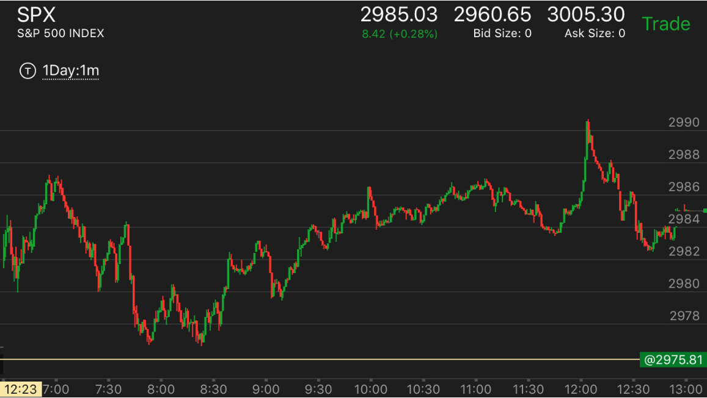
图示：开盘后，冲高，走低，然后从底部开始第一浪上涨，稍微拉回后，然后再次上冲，
然后走平，再次上涨。这样就完成了三段上涨走势。6：55到达顶部。这个就是一个快速上涨走势。
7：00开始下跌，它下跌的第一浪就很大，一下就跌了7个点，然后7：20一个两段上涨走势，拉回后，再次下跌，这次速度很快。
也跌了7个点。这个其实算是第一浪下跌。因为前面刚刚出现了两浪上涨。但是它的速度很快。第二浪下跌只要加速就够了。不需要幅度
很大。8:05开始第二浪下跌。
所以这个走势具有双重性。一方面，它是一个第一浪，但是它同时又是7：00下跌的第二浪。8：20，它出现了一个小的三段
下跌，加速走势，然后大涨。
开盘反转后，出现的主要走势
TOP
这个走势，要注意它的第一浪直到越过开盘极点才开始算。开始如果非常缓慢的时候，不算第一浪
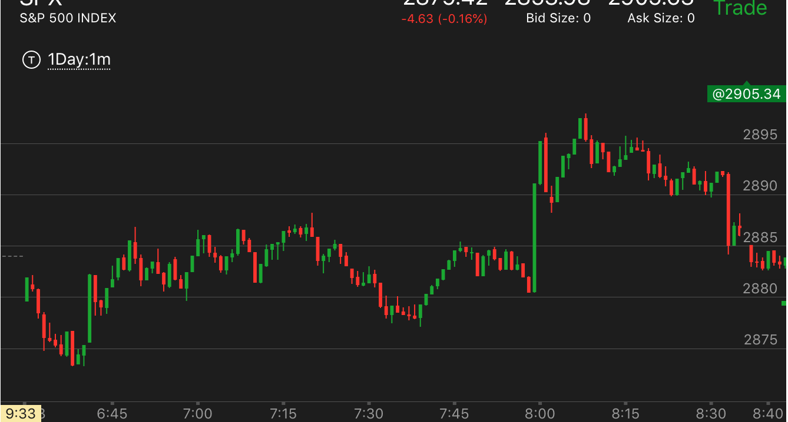
图示:
1. 开盘后，出现了两段下跌走势。6：42它的第一浪就大涨，幅度很大。然后稍微回调后，缓慢上涨。说明它处于升势，而在7：30回调后，
它就变成了最宝贵的走势，趋势确定是升势，没有爆发，而且填补了真空。一定要紧紧拿住。直到爆发或者大幅上涨为止。忽略一切中间小的波动。
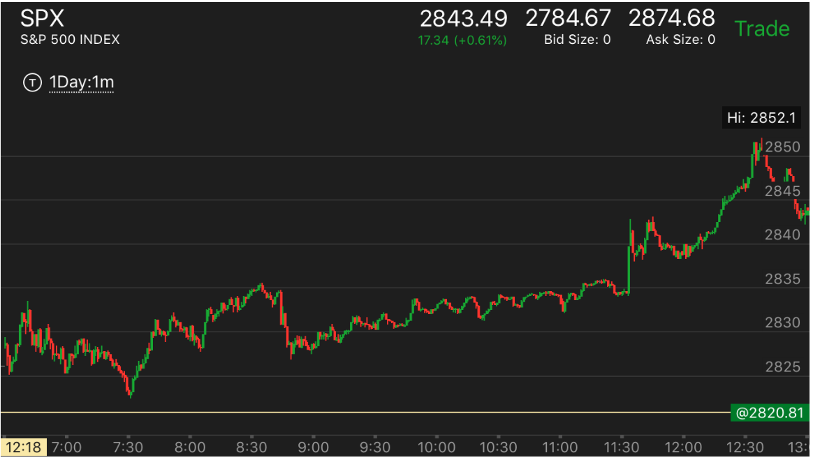
图示:开盘后，冲高，然后出现了两段下跌。
8：30缓慢的创立新高后，快速拉回。它的拉回速度超过了上涨速度。
这个说明未来一定还会超过前面的高点，而它的真空也由于这样的拉回被填补了。
快速运动的主要走势
TOP
一个快速的主要走势，一般是两段，或者三段走势。中间走平的时间不长，
通常第一段幅度就很大，然后拉回后，再次大幅运动，或者出现一个三段走势，然后就转折了。这样给人的感觉
很猛烈。而它反转的时候，速度很小。很弱。让人以为要继续运动。其实它已经反转了。
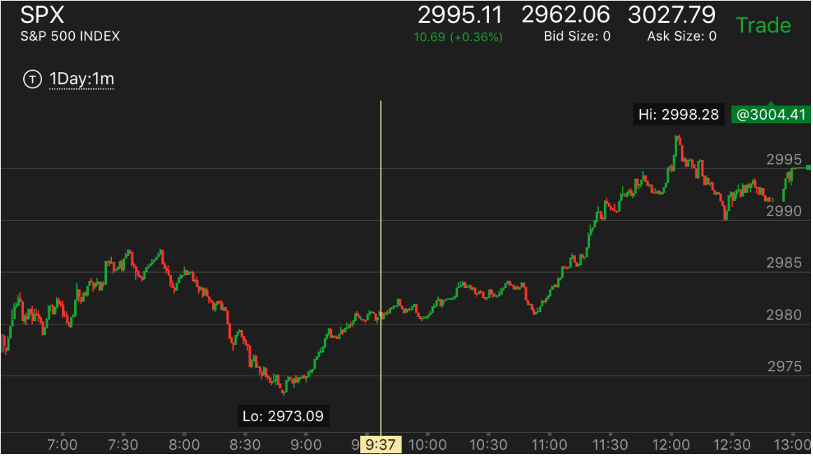
图示：开盘后，看到它出现明显的第一浪。回调出现了两段走势后，没有很多走平的时间，
就开始快速冲高。超过了第一浪的幅度。这样的走势很容易回调。7：40出现了回调的第一浪，也是很快就不断下跌。
这样的走势也容易回调。但是一定要创新低。注意8：40，它出现了反向加速后，反弹，然后走平很久，超过10分钟。这样显得很弱。
但是这个就是一个主要走势的开始，千万不能把被它的弱势影响直觉。随后的第一浪虽然很大，但是它走平震荡接近两个小时。
说明会继续上涨。
主要走势的反向走势
TOP
一定要是新高或者新低才会出现反向走势。反向走势的特点，从极点开始，在极点停留时间很短，只有2，3分钟，第一浪就很大，然后转折
很小，再次运动，越过前面主要走势走平很长时间的地方，形成了加速。
其实有些主要走势本身也是如此，这样的主要走势也很容易反转。但是前面并没有一个走平点可以看。
这时应该看第二浪幅度和相对加速。看到很大幅度的反向走势后，选择合适的期权买入。但是不要和第一浪就很大的反向两段走势
混淆了。
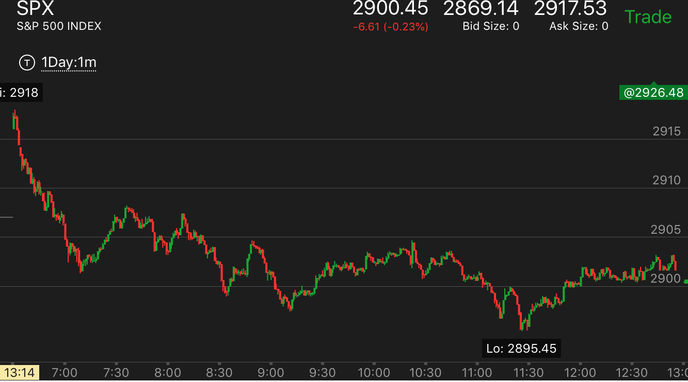
图示：
1. 7:10下跌出现了反复转折的走势后，开始上涨。它开始上涨的时候，速度很慢。表示可以持续。但是第二浪就幅度很大。
速度也比较块。稍微回调后，再次走高。这样除了它开始的阶段外，它走了一个两段走势。这个两段走势，第一段很大，第二段很小。
2. 8:30下跌出现了反复转折后，反转。结果它的上涨很快就出现了两段走势。导致走势的结束。
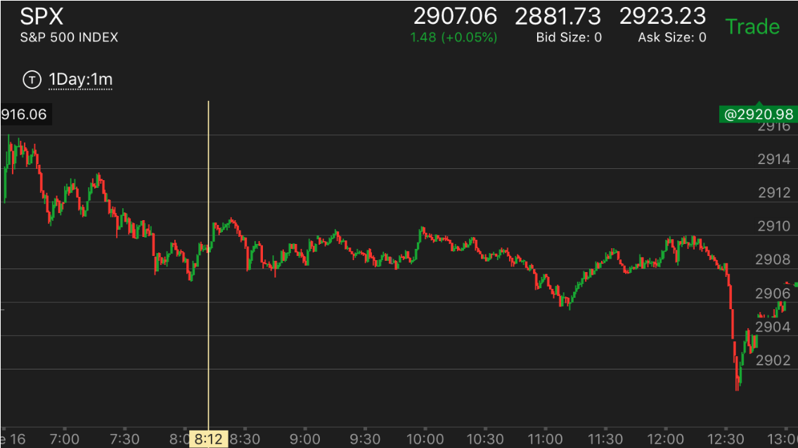
图示：8：10的两段反弹走势，越过前面的走平点，形成了加速走势。
11:10大盘出现三段下跌走势，它第一浪反弹就很大。拉回后，走平一段时间，再次上涨。
这个上涨拉回后，12：05开始快速上涨，速度只有一分钟。如果应用相对论。前面的慢速上涨都被拉回原位，这样的快速更被拉回。
而且它越过了前面的走平点。
从两段走势的角度看。
这个本身也构成了两段走势。虽然它的第二段没有创走势新高。但是再高处一直走平。这样就反转了。而从下跌的角度看，12：00的下跌速度很快。
而12：20开始的下跌速度很慢，这样应该跌幅超过前面的下跌才对。

图示：10：20是反弹，第一浪就很大，然后超过了前面的走平点。但是要小心2：20的反弹，
这个是转势，不是反向走势。
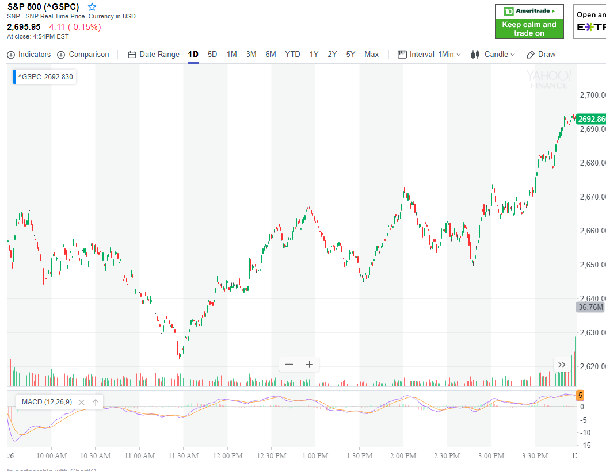
图示：开盘后，下跌。然后走平很久。它走平后，再次下跌，幅度很大。速度也比较快。
造成了反转。它反转的时候，可以看到不断的走平，速度其实很慢。这样可以持续的上涨。12：50出现了反向走势。可以看到它速度很快，
第一浪就幅度很大，然后两个小浪。2：00开始的回调也是如此，很快就出现了两段走势。这时应该买期权做多。从更广阔的时间幅度看，
11：30上涨后，它走平，而1：30上涨后，两者幅度差不多，但是它立刻拉回。说明更弱。不是一个两段走势结束。
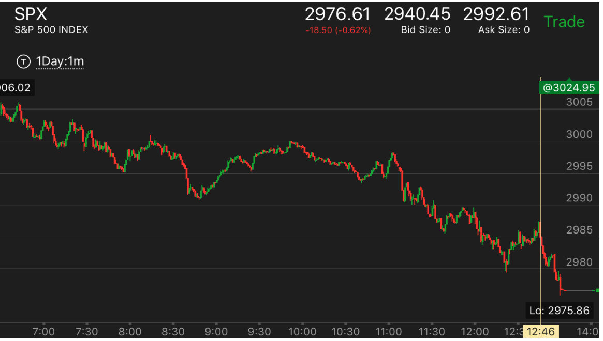
图示：7：40，8：40，12：20都是一个反向走势。它们的共同特点是，从底部很快反弹，
第一浪很大。稍微回调后，再次冲高，越过前面的走平点。特别是8：40的走势。它开始的时候，稍微涨一些，然后拉回，显得很弱。
但是立刻就大幅上涨。因为幅度很大。可以肯定，未来一定低于这个点2990.
反弹到了2998附近后，2995的put只有1.5左右，应该坚决的分批买入。因为这个一定会赚钱。10：40也出现了一个大的反向走势。
这个走势通常说明它一定会跌。也可以利用它来反复交易。比如先卖掉put，然后低价买回来。一个想要大幅前进的主要走势。
都会利用这个特点，反复洗盘。

图示：开盘下跌，出现了两段走势，然后反弹。10：50开始的反弹，一开始就很大。
但是它没有超过前面的高点。走平后，再次反弹，这次才是第一浪，又走平了很久。可以把它前面看作是第一浪。一共10个点。
又走平这么久，不会再回调了。
走势一开始就出现两段走势，大幅回调后，再出现主要上涨走势
TOP
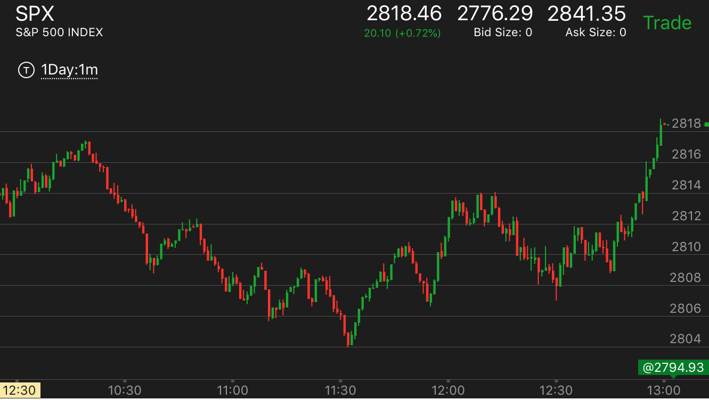
图示：11：10， 它反弹很大，而下跌速度很快，创新低。
这个其实就是底部了。但是它没有立刻反弹，而是稍微反弹后，再次走低，然后反弹。
11：30出现了底部加速后，开始上涨。它回调后，继续上涨。两段上涨间隔时间不长，这样就形成了两段走势。
这个走势是底部加速走势，它应该去反10：20开始的跌势，也就是要至少涨到2816. 而这个比2816低很多，直到2814.而且它上涨速度很慢，
说明应该超过2816才对。
它回调后，再12：30出现了下跌后，没有反弹，再次走低的走势。这样就形成了一个底部。12：30它立刻冲高，然后拉回。这个是典型的大涨走势。
拉回后，徘徊几分钟。它大涨到2818收盘，超过了2816.
TOP
长时间的启动后，出现两段走势而反转的主要走势
- 这样的走势通常是开始很慢的建立。用了很长时间，建立完成后，
出现一个两段走势后，结束主要走势。
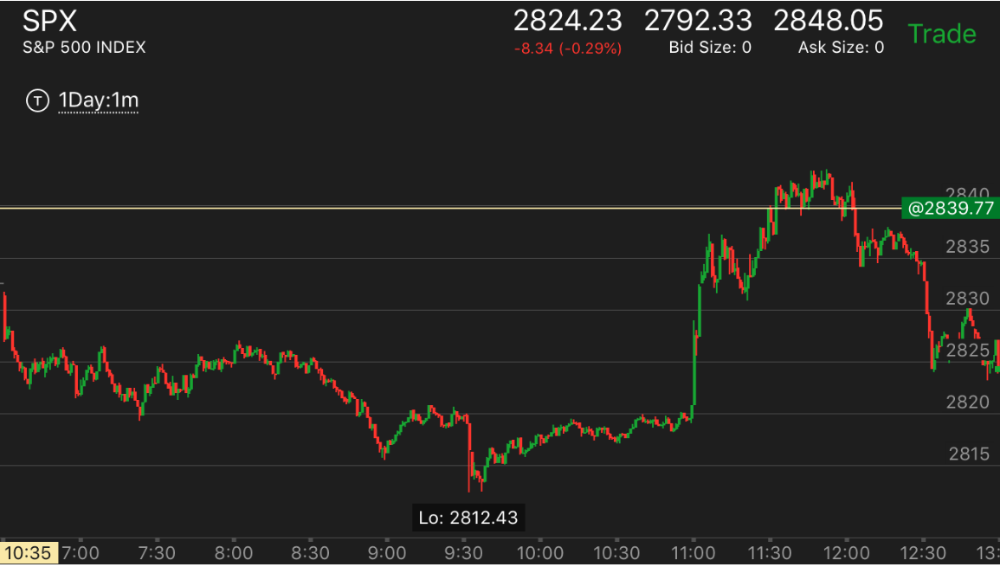
图示：9：30出现了两段大跌后，缓慢的反弹。其实幅度不算很小。
但是时间很长。超过一个小时，用了90分钟来建立。这样就成了一个主要走势。
11：00宣布利率后，它先是大涨，然后休息一段时间，再次大涨。在高点走平很久。形成了两段走势。结束升势。
它第一段上涨后，回调幅度很大。而第二段上涨后，震荡幅度就小的多。11：40在最高点附近，进入更加小的震荡。
这个都是头部的特征。

图示：9：40它出现了底部加速的走势后，见底。快速反弹。然后再次走低。这个走势缓慢的
走低走了一个多小时。一方面为前面反弹过快而调整，也为未来大涨做准备。它在10：50出现了走平后下跌的走势，
也恰好填补了真空。大涨。这个大涨出现了两段上涨的走势。11：00开始的大涨，中间的调整时间只有20分钟，就开始第二浪
上涨。和前面明显有加速的样子。显得很强，然而却是上涨的结束。
TOP
开盘后冲高，然后长时间缓慢震荡，形成第一浪
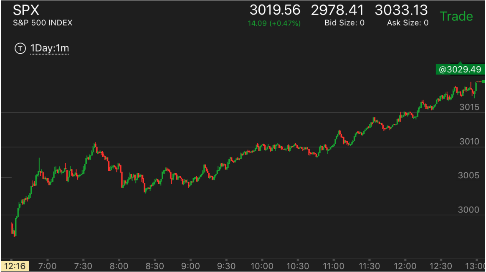
图示：开盘后，前三分钟走低，然后大幅快速上涨。这个就是第一浪了。
它上涨后，走平几分钟，6：50再次上涨。似乎是个两段走势。但是它的第二段并没有第一段幅度大。所以没有反转。
它震荡后，7：30再次上涨，出现了一个两段上涨走势，然后反转了。要记住这个只能是部分反转，反转的是这个两段走势。
8：00它下跌后，低于两段走势的开始。任务完成了。从更大的走势看，如果它要大涨，一定要大幅拉回一下，才会继续上涨。
不可能不拉回就大涨。这个下跌恰好完成了这个任务。8：20它再次走低，然后回到前面的低点，走平。这样8：00的反弹很大。
而8：20反弹很小。形成了加速走势。这样就反转了。另外8：20它没有形成跨越走势，而是回来后形成了双底。这样也表示
大盘反转了。加上前面开盘的第一浪很强。这样表示第二浪会非常的强。
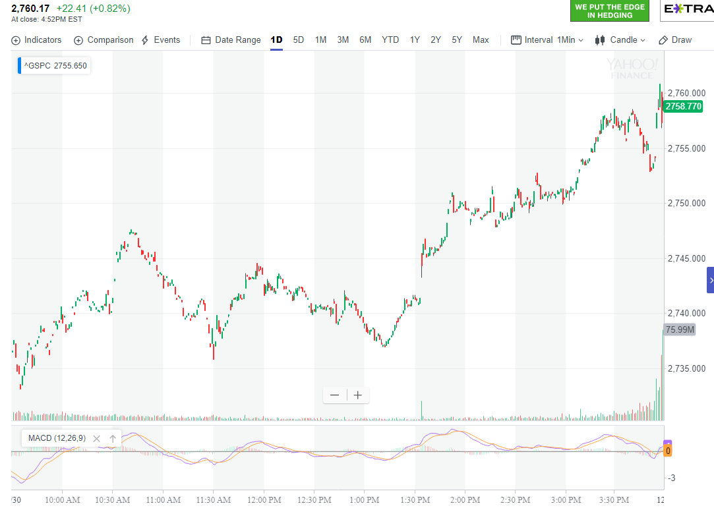
图示：开盘后，冲高，似乎到了顶部，但是它拉回后，很快走出了两段下跌走势。
中间震荡时间很长。这样开盘就成了第一浪。

图示：开盘后，冲高，然后下跌，立刻回到原位，这个就是一个相对论。一旦下跌反转，至少回到这个点。它下跌很快出现了两段走势。
7：00开始反转上涨，很快回到了开盘高点。而从跌势考虑，它开盘冲高后，被全部拉回。这次再次冲高，肯定也会大跌。如果跌的速度比较慢，只会比原来更低。
7：15 开始的下跌，时间更长，跌的也更低。8：00才跌倒底部，出现了两段跌势。然后再次反转。如果升的时间更长。它应该比原来的高点更高。
这样震荡幅度不断扩大。每个走势都比原来的时间更长，而运动幅度也更大。但是从另外一个角度看，它开盘后，冲高，然后很久也没有大跌。
这样开盘就形成了第一浪，震荡后，继续上涨。

图示：开盘冲高后，拉回，再次冲高，不到高点，再次拉回，显得很弱。11：20
出现了加速下跌，走平。这样，考虑它已经震荡了一个小时了。一定就是升势了。
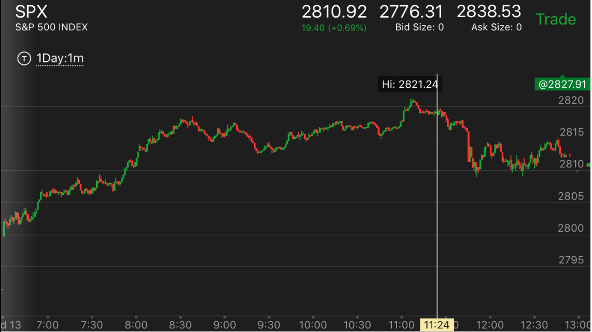
图示：开盘后，震荡，6：45冲高，幅度不大。震荡接近一个小时，
中间出现新高后，立刻拉回。说明处于升势。而且时间很长，说明是主要升势。
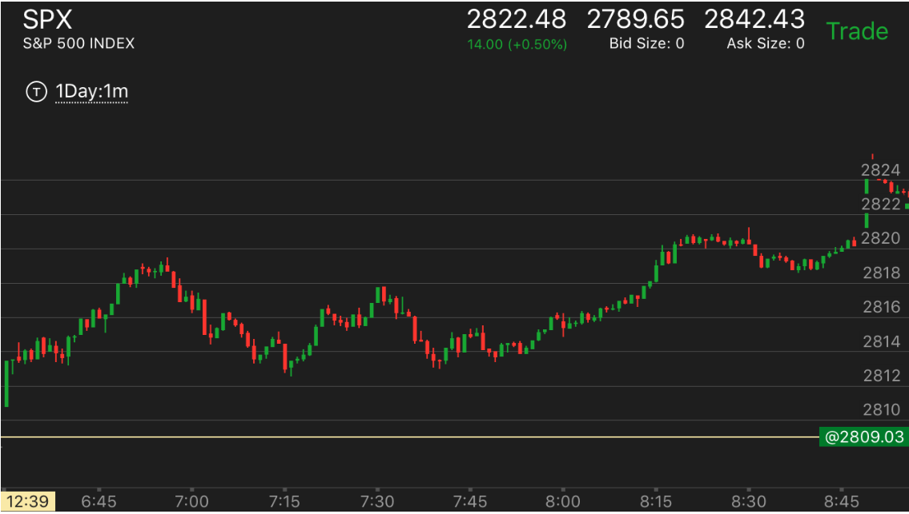
图示：开盘后，走平几分钟后，冲高，没有加速，就回调。
7：15回调结束。它第一次上涨，速度太快。被拉回，然后缓慢上涨，一举突破前面高点。这个准备时间很长，一旦发动
会很强大。
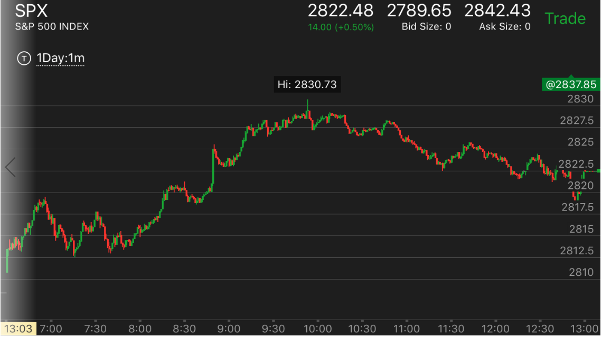
图示：开盘走平后出现上涨，似乎是第一浪。拉回后，震荡很久，这样开盘就成了第一浪。